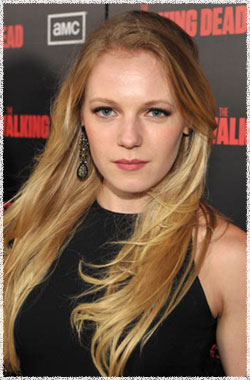

Эмма Белл
 Эми (актриса Эмма Белл) - студентка курса физическокго образования, родная сестра Андреа. Вместе со своей сестрой присоеденилась к группе выживших на границе Атланты. В лагере её ролью был уход за детьми.
Эмма Белл (Emma Bell) - американская актриса, родилась 17 декабря 1986 года в США в городе Нью-Джерси.
Эмма Белл родилась и выросла в Нью-Джерси, в возрасте 16 лет переехала в Нью-Йорк следуя своей актёрской мечте. Она посещала высшую школу исполнительских видов искусства в восточной стороне Манхэттена. После нескольких эпизодов сериала Law & Order (Закон и порядок), независимых фильмов и рекламных роликов, она остановилась на Bedford Diaries (Дневники Бедфорда) сценариста Тома Фонтана.
Позднее Эмма проходила кастинг в Elektra Luxxe режиссера Себастьяна Гутьерреса, вместе с Джозефом Гордон-Левиттом, Малин Акерман, Карлом Гуджино и Тимоти Олифантом и получила роли в сериалах Ghost Whisperer (Говорящая с призраками) и Supernatural (Сверхъестественное).
Зимой 2009 года Белл снялась фильме Frozen (Замёрзшие) автора сценария и режиссера Адама Грина, снятый в зимней тундре штата Юта.
Играла роли в сериалах:
Ходячие мертвецы (The Walking Dead)
Сверхъестественное (Supernatural)
Говорящая с призраками (Ghost Whisperer)
Закон и порядок (Law & Order)
Кукольный дом (Dollhouse)